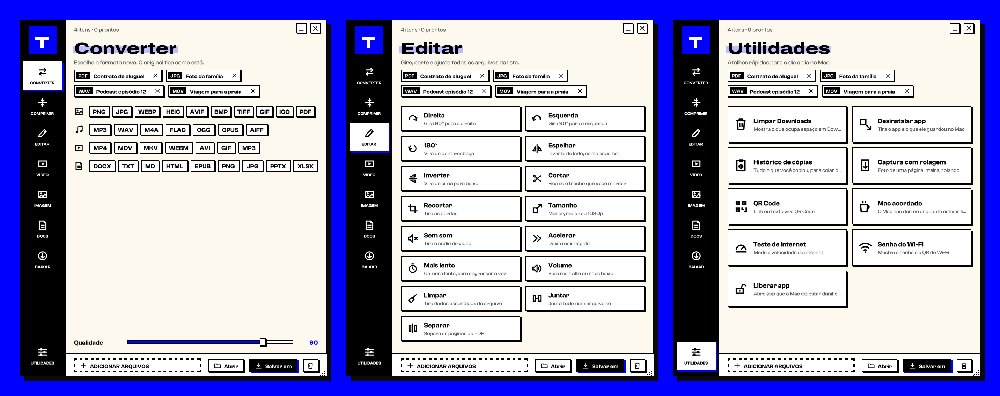
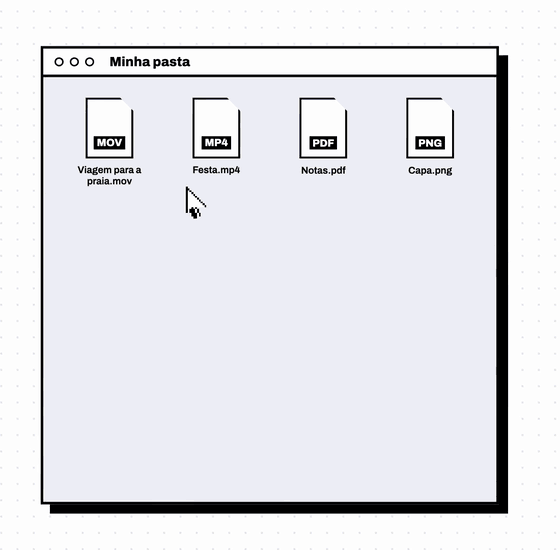

O faz-tudo de arquivos.
Converta, comprima e edite qualquer arquivo. Legende vídeos, grave a tela, traduza e muito mais, num app pequeno. Sem abrir site estranho e sem mandar seus arquivos para ninguém.

Por que usar
Nada sai do seu Mac
Seus arquivos são processados no próprio computador. Nenhum upload.
Sem conta e sem login
Abriu, usou. Ninguém pede seu e-mail.
Sem anúncio e sem assinatura
É grátis de verdade, e vai continuar assim.
Um app no lugar de dez sites
Converter, comprimir, editar, legendar, gravar e muito mais.
Roda do Shift
Segure Shift ao arrastar um arquivo e escolha o que fazer, sem nem abrir o Treco.
Se atualiza sozinho
Avisa quando sai versão nova. Fala português e inglês.
O que ele faz
Vídeo e áudio
- Converter (MP4, MOV, MP3, WAV…)
- Comprimir até o tamanho que você quer
- Cortar, recortar, girar, espelhar
- Mais rápido ou mais lento sem engrossar a voz
- Tirar o som, ajustar o volume
- Legendar vídeo e transcrever a fala
- Gravar voz, tela, ou tela com voz
Imagem
- Converter (JPG, PNG, HEIC, WEBP…)
- Comprimir
- Escanear documento: foto vira PDF reto e limpo
- Fotos em PDF
- Slides em vídeo
- Tirar o fundo, ler texto, borrar rostos
- Marca d'água
Documentos
- PDF ↔ Word, planilhas, apresentações
- Juntar e separar PDF
- Pôr e tirar senha de PDF
- Traduzir documentos e legendas
- Resumir página com a IA do próprio Mac
- Renomear em lote
Utilidades
- Captura de tela com rolagem
- Histórico de cópias
- Desinstalar apps por completo
- Limpar a pasta Downloads
- QR Code e senha do Wi-Fi
- Manter o Mac acordado
- Teste de internet

Roda do Shift
Segure ⇧ Shift e arraste um arquivo no Finder: as ações aparecem em volta do cursor.
Soltou, pronto. O original nunca é movido nem apagado.
Novidades
Como instalar
- Baixe o Treco (arquivo
.dmg). - Abra o arquivo e arraste o Treco para a pasta Aplicativos.
- Abra o Treco pelos Aplicativos.
- Na primeira vez, o Mac avisa que não consegue verificar o app, porque ele é gratuito e não passou pela loja da Apple. Abra Ajustes do Sistema → Privacidade e Segurança, role até o fim e clique em Abrir Mesmo Assim. Só precisa fazer isso uma vez.
Precisa de
- Mac com chip Apple (M1 ou mais novo) e macOS 13 ou mais novo.
- Traduzir e Resumir página precisam do macOS 26 (o Resumir também precisa da Apple Intelligence ligada).
Permissões que o Mac pode pedir
- Gravação de Tela: para gravar a tela e para a captura com rolagem.
- Microfone: para gravar a voz.
- Pasta Downloads: para o Limpar Downloads.
- Controlar o Finder: só ao desinstalar apps da App Store.
- Acesso Total ao Disco (opcional): para o Desinstalar apagar as pastas de dados que o macOS protege.
Privacidade
O Treco não tem conta, não coleta dados e não envia seus arquivos para lugar nenhum. Ele só usa a internet quando você pede (baixar um vídeo, ler uma página para resumir, testar a internet, baixar o modelo de legendas) e, uma vez por dia, para ver se saiu uma versão nova.
Apoie o Treco
O Treco é e vai continuar grátis. Fiz ele sozinho, com carinho. Se ele te ajudou, qualquer valor ajuda muito. Obrigado de coração! — Mateus
e2a1f4a9-ebfe-4c3c-a531-92a0e7433f14